import numpy as np
import matplotlib.pylab as plt
np.random.seed(2022)Lab 4 · Binary and Multi-class Classification
Adaline, logistic regression and softmax regression trained with gradient descent
Linear and logistic binary classifiers for AND/OR, and a softmax classifier for quadrants.
NoteAbout this edition
English text and comments were edited for publication. Outputs are archived notebook results, not newly executed results. Lab scaffolds and reference illustrations were supplied by the course. Source and reproducibility notes.
TipSummary
Starting from the logical AND / OR problems, this lab trains a linear classifier (Adaline, MSE loss) and a logistic classifier (sigmoid, binary cross-entropy) with gradient descent, draws their decision boundaries and compares the 3-D shapes of the two hypotheses. The second part generalizes to multi-class classification: one-hot encoding, the softmax function, categorical cross-entropy and its gradient, applied to a quadrant classifier. A final experiment shows why the decision boundaries of a linear softmax model cannot match the quadrant axes when the training data are too few, and how a denser dataset fixes it.
1. Designing a Binary Classifier
1.0 Logical AND / OR
################## Logical AND ##################
X = np.array([[0, 0], [0, 1], [1, 0], [1, 1]])
Y = np.array([[0], [0], [0], [1]])
AND = (X, Y)
plt.plot(X[:-1, 0], X[:-1, 1], 'b.', markersize=20, label = "False")
plt.plot(X[-1, 0], X[-1, 1], 'r.', markersize=20, label = "True")
plt.xlim(-0.5, 1.5)
plt.ylim(-0.5, 1.5)
plt.grid()
plt.xlabel("x1")
plt.ylabel("x2")
plt.legend()
plt.show()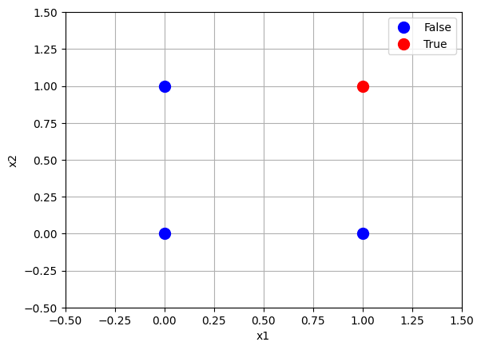
################## Logical OR ##################
X = np.array([[0, 0], [0, 1], [1, 0], [1, 1]])
Y = np.array([[0], [1], [1], [1]])
OR = (X, Y)
plt.plot(X[0, 0], X[0, 1], 'b.', markersize=20, label = "False")
plt.plot(X[1:, 0], X[1:, 1], 'r.', markersize=20, label = "True")
plt.xlim(-0.5, 1.5)
plt.ylim(-0.5, 1.5)
plt.grid()
plt.xlabel("x1")
plt.ylabel("x2")
plt.legend()
plt.show()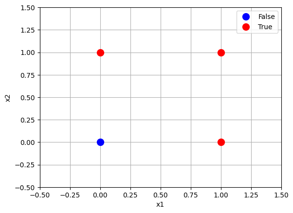
1.1 Classifier with a linear activation: Adaline
Lecture 3 slides (logistic regression), p. 3 ff.
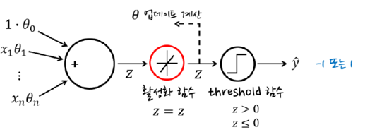
def binary_classifier_linear(x, theta):
z = x.dot(theta)
z = z
y_hat = (z >= 0.5).astype(int)
return y_hat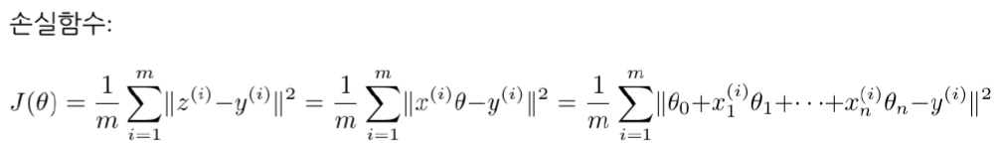
# Mean squared error (MSE)
# Ref: Lecture 2 (linear regression) p.29
def mean_square_error(y_hat, y):
################## Fill Your Code! ##################
return np.mean((y_hat - y)**2)
#####################################################First, let us build a linear classifier for the AND operation.
X, Y = AND
print("X : ")
print(X)
print("Y : ")
print(Y)X :
[[0 0]
[0 1]
[1 0]
[1 1]]
Y :
[[0]
[0]
[0]
[1]]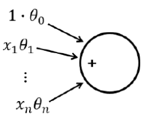
AND / OR take two inputs \([x_1, x_2]\).
To include a bias term, the data are padded with a column of ones.
################## Fill Your Code! ##################
# hint : np.c_ / np.ones
X_ = np.c_[np.ones(X.shape[0]), X]
#####################################################
print(X_)[[1. 0. 0.]
[1. 0. 1.]
[1. 1. 0.]
[1. 1. 1.]]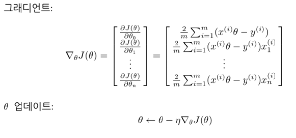
eta = 0.1
n_iterations = 10
(m, n) = X_.shape # m : num of data / n : dim of data
################## Fill Your Code! ##################
theta = np.random.randn(n,1)
#####################################################
J_hist = []
for iteration in range(n_iterations):
################## Fill Your Code! ##################
Y_hat = X_.dot(theta)
#
print("theta", theta)
print("Y_hat: ", Y_hat)
gradients = 2/m * X_.T.dot(Y_hat - Y)
theta = theta - eta * gradients
#####################################################
J = mean_square_error(Y_hat, Y)
J_hist.append(J)
theta_lin = theta
# plot J history
plt.plot(J_hist, 'r', linewidth = 2, label = "loss")
plt.xlabel("iter")
plt.ylabel("J")
plt.legend()
plt.show()theta [[1.98468616]
[0.28210933]
[0.76080866]]
Y_hat: [[1.98468616]
[2.74549482]
[2.26679548]
[3.02760414]]
theta [[1.53345713]
[0.06738934]
[0.52215371]]
Y_hat: [[1.53345713]
[2.05561084]
[1.60084647]
[2.12300018]]
theta [[ 1.2178114 ]
[-0.06880299]
[ 0.36322316]]
Y_hat: [[1.2178114 ]
[1.58103456]
[1.14900841]
[1.51223157]]
theta [[ 0.9948071 ]
[-0.15186499]
[ 0.25855985]]
Y_hat: [[0.9948071 ]
[1.25336695]
[0.84294211]
[1.10150197]]
theta [[ 0.83517619]
[-0.19908719]
[ 0.19081641]]
Y_hat: [[0.83517619]
[1.0259926 ]
[0.636089 ]
[0.82690541]]
theta [[ 0.71896803]
[-0.22223691]
[ 0.14817151]]
Y_hat: [[0.71896803]
[0.86713954]
[0.49673112]
[0.64490263]]
theta [[ 0.63258097]
[-0.2293186 ]
[ 0.1225694 ]]
... [15 lines omitted] ...
[0.61740001]
[0.2998211 ]
[0.40210406]]
theta [[ 0.47339495]
[-0.20039222]
[ 0.10130775]]
Y_hat: [[0.47339495]
[0.5747027 ]
[0.27300273]
[0.37431048]]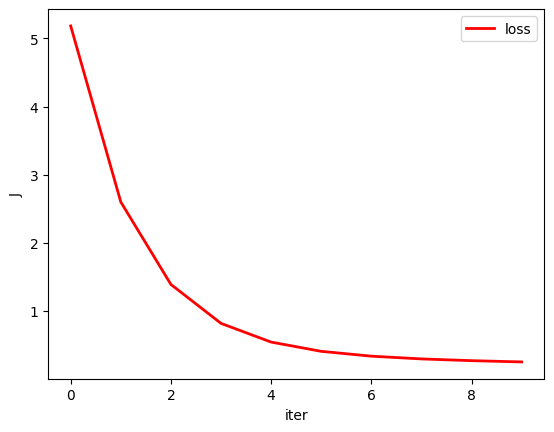
Y_hat = binary_classifier_linear(X_,theta)
print(X_.dot(theta).T)
print(Y_hat.T)
print(Y.T)[[-0.25 0.25 0.25 0.75]]
[[0 0 0 1]]
[[0 0 0 1]]num_of_samples = 30
(m, n) = X_.shape
x1_min = -0.2
x1_max = 1.2
x2_min = -0.2
x2_max = 1.2
x1 = np.linspace(x1_min, x1_max, num_of_samples)
x2 = np.linspace(x2_min, x2_max, num_of_samples)
X_new = np.ones((num_of_samples**2 , n))
for i in range(num_of_samples):
for j in range(num_of_samples):
X_new[i*num_of_samples + j, 0] = 1
X_new[i*num_of_samples + j, 1] = x1[i]
X_new[i*num_of_samples + j, 2] = x2[j]
Y_hat = binary_classifier_linear(X_new, theta)
print(Y_hat.size)
Y_hat = np.reshape(Y_hat, (num_of_samples**2))
print(Y_hat.size)
plt.plot(X_new[Y_hat == 1][:, 1], X_new[Y_hat == 1][:, 2], 'g.', markersize = 4)
idx1 = np.where(X_new[Y_hat == 1][:, 1] == min(X_new[Y_hat == 1][:, 1]))[0][0]
# idx2 = np.where(X_new[Y_hat == 1][:, 1] == max(X_new[Y_hat == 1][:, 1]))[0][0]
plt.plot([X_new[Y_hat == 1][:, 1][idx1], X_new[Y_hat == 1][:, 2][idx1]], [X_new[Y_hat == 1][:, 2][idx1], X_new[Y_hat == 1][:, 1][idx1]], 'r--')
plt.plot(X[:-1, 0], X[:-1, 1], 'b.', markersize=20, label = "False")
plt.plot(X[-1, 0], X[-1, 1], 'r.', markersize=20, label = "True")
plt.xlim(x1_min, x1_max)
plt.ylim(x2_min, x2_max)
plt.grid()
plt.xlabel("x1")
plt.ylabel("x2")
plt.legend()
plt.show()900
900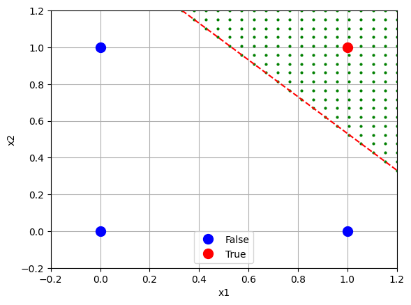
1.2 Classifier with a sigmoid activation: logistic regression
Lecture slides, pp. 18–27
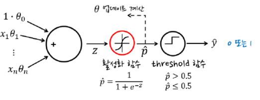
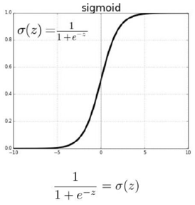
# Ref: Lecture (logistic regression) p.11
def sigmoid(z):
################## Fill Your Code! ##################
return 1 / (1 + np.exp(-z))
#####################################################def binary_classifier_logistic(x, theta):
################## Fill Your Code! ##################
z = x.dot(theta)
p_hat = sigmoid(z)
#####################################################
y_hat = (p_hat >= 0.5).astype(int)
return y_hat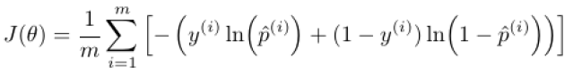
# Cross entropy
# Ref: Lecture 2 (linear regression) p.29
def cross_entropy_binary(p_hat, y):
################## Fill Your Code! ##################
return - np.mean(y*np.log(p_hat) + (1-y)*np.log(1-p_hat))
#####################################################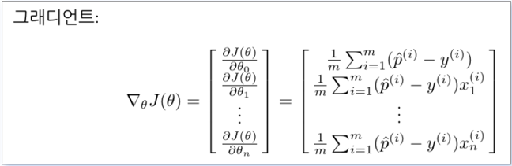
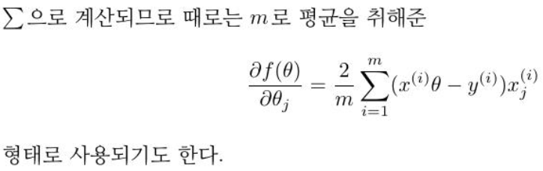
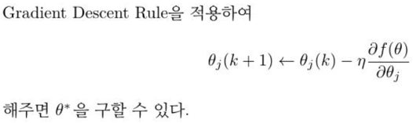
X, Y = OR
X_ = np.c_[np.ones(X.shape[0]), X]
print("X_ : ")
print(X_)
print("Y : ")
print(Y)X_ :
[[1. 0. 0.]
[1. 0. 1.]
[1. 1. 0.]
[1. 1. 1.]]
Y :
[[0]
[1]
[1]
[1]]eta = 0.1
n_iterations = 1000
(m, n) = X_.shape # m : num of data / n : dim of data
################## Fill Your Code! ##################
theta = np.random.randn(n,1)
#####################################################
J_hist = []
for iteration in range(n_iterations):
################## Fill Your Code! ##################
P_hat = sigmoid(X_.dot(theta))
gradients = 2/m * X_.T.dot(P_hat - Y)
theta = theta - eta * gradients
#####################################################
J = cross_entropy_binary(P_hat, Y)
J_hist.append(J)
theta_log = theta
# plot J history
plt.plot(J_hist, 'r', linewidth = 2, label = "loss")
plt.xlabel("iter")
plt.ylabel("J")
plt.legend()
plt.show()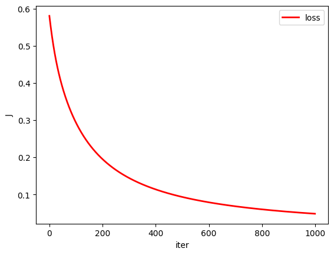
Y_hat = binary_classifier_logistic(X_, theta)
print(sigmoid(X_.dot(theta).T))
print(Y_hat.T)
print(Y.T)[[0.10307223 0.95943732 0.95904397 0.99979256]]
[[0 1 1 1]]
[[0 1 1 1]]num_of_samples = 30
(m, n) = X_.shape # m : num of data / n : dim of data
x1_min = -0.2
x1_max = 1.2
x2_min = -0.2
x2_max = 1.2
x1 = np.linspace(x1_min, x1_max, num_of_samples)
x2 = np.linspace(x2_min, x2_max, num_of_samples)
X_new = np.ones((num_of_samples**2 , n))
for i in range(num_of_samples):
for j in range(num_of_samples):
X_new[i*num_of_samples + j, 0] = 1
X_new[i*num_of_samples + j, 1] = x1[i]
X_new[i*num_of_samples + j, 2] = x2[j]
Y_hat = binary_classifier_logistic(X_new, theta)
Y_hat = np.reshape(Y_hat, (num_of_samples**2))
plt.plot(X_new[Y_hat == 1][:, 1], X_new[Y_hat == 1][:, 2], 'g.', markersize = 4)
idx1 = np.where(X_new[Y_hat == 1][:, 1] == min(X_new[Y_hat == 1][:, 1]))[0][0]
idx2 = np.where(X_new[Y_hat == 1][:, 1] == max(X_new[Y_hat == 1][:, 1]))[0][0]
plt.plot([X_new[Y_hat == 1][:, 1][idx1], X_new[Y_hat == 1][:, 2][idx1]], [X_new[Y_hat == 1][:, 2][idx1], X_new[Y_hat == 1][:, 1][idx1]], 'r--')
plt.plot(X[0, 0], X[0, 1], 'b.', markersize=20, label = "False")
plt.plot(X[1:, 0], X[1:, 1], 'r.', markersize=20, label = "True")
plt.xlim(x1_min, x1_max)
plt.ylim(x2_min, x2_max)
plt.grid()
plt.xlabel("x1")
plt.ylabel("x2")
plt.show()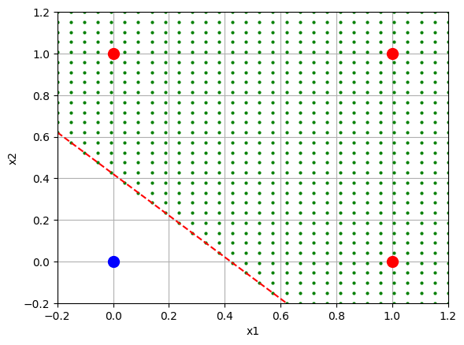
1.3 Linear Classifier vs. Logistic Classifier
This section compares the 3-D surfaces produced by the linear classifier and by the logistic classifier.
X1 = np.arange(-1, 1.5, 0.1)
X2 = np.arange(-1, 1.5, 0.1)
X1,X2 = np.meshgrid(X1,X2)
Z = np.zeros_like(X1)
for i in range(len(X1)):
for j in range(len(X1)):
x1 = X1[i, j]
x2 = X2[i, j]
x = np.array([[1, x1, x2]])
y_hat = x@theta_lin
Z[i, j] = y_hat
fig = plt.figure()
ax = fig.add_subplot(projection='3d')
surf = ax.plot_surface(X1,X2,Z,cmap='coolwarm',linewidth=0,antialiased=False)
wire = ax.plot_wireframe(X1,X2,Z,color='r',linewidth=0.1)
fig.colorbar(surf,shrink=0.5,aspect=5)
fig.tight_layout()
ax.set_xlabel('x1 axis')
ax.set_ylabel('x2 axis')
ax.set_zlabel('y_hat axis')
plt.show()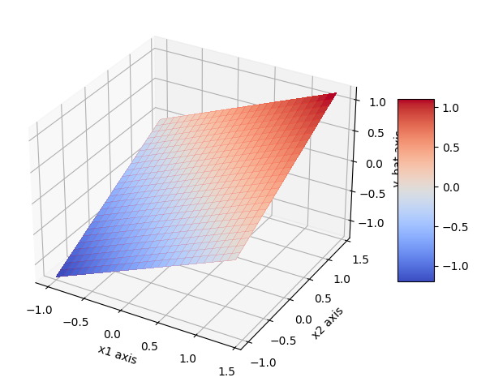
X1 = np.arange(-1, 1.5, 0.1)
X2 = np.arange(-1, 1.5, 0.1)
X1,X2 = np.meshgrid(X1,X2)
Z = np.zeros_like(X1)
for i in range(len(X1)):
for j in range(len(X1)):
x1 = X1[i, j]
x2 = X2[i, j]
x = np.array([[1, x1, x2]])
y_hat = sigmoid(x@theta_log)
Z[i, j] = y_hat
fig = plt.figure()
ax = fig.add_subplot(projection='3d')
surf = ax.plot_surface(X1,X2,Z,cmap='coolwarm',linewidth=0,antialiased=False)
wire = ax.plot_wireframe(X1,X2,Z,color='r',linewidth=0.1)
fig.colorbar(surf,shrink=0.5,aspect=5)
fig.tight_layout()
ax.set_xlabel('x1 axis')
ax.set_ylabel('x2 axis')
ax.set_zlabel('p axis')
plt.show()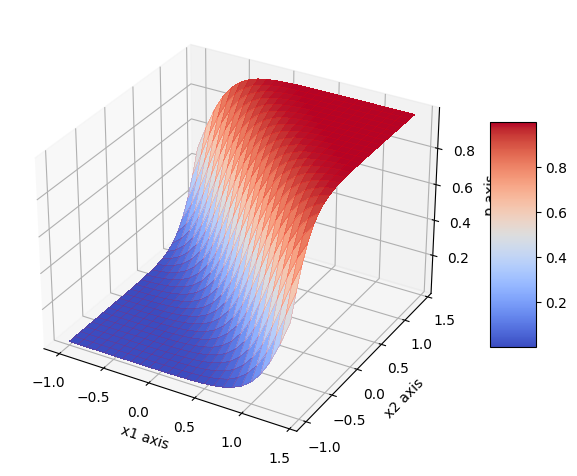
2. Designing a Multi-class Classifier
Lecture 4 slides
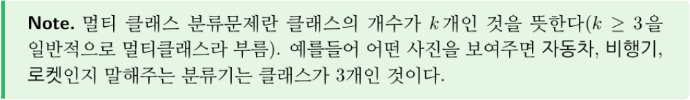
2.1 Example: Quadrant Classifier
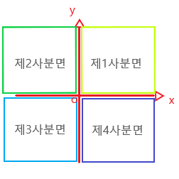
In this multi-class example we build a classifier that tells which quadrant a 2-D point belongs to.
X = np.array([[1, 1],
[1, 3],
[-1, 3],
[-3, 2],
[-3, -2],
[-1, -2],
[2, -3],
[1, -3]])
################## Fill Your Code! ##################
Y = np.array([[1],[1],[2],[2],[3],[3],[4],[4]])
#####################################################One-Hot Encoding
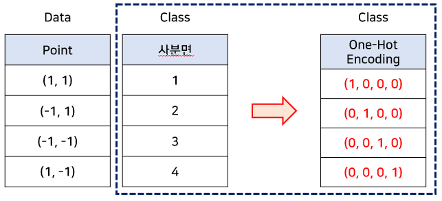
## One-Hot Encoding
(m, n) = X.shape # m : num of data / n : dim of data
k = 4 # num of class
################## Fill Your Code! ##################
Y_ = np.zeros((m,k))
for i in range(m):
Y_[i, Y[i,0]-1] = 1
#####################################################
print(Y_)[[1. 0. 0. 0.]
[1. 0. 0. 0.]
[0. 1. 0. 0.]
[0. 1. 0. 0.]
[0. 0. 1. 0.]
[0. 0. 1. 0.]
[0. 0. 0. 1.]
[0. 0. 0. 1.]]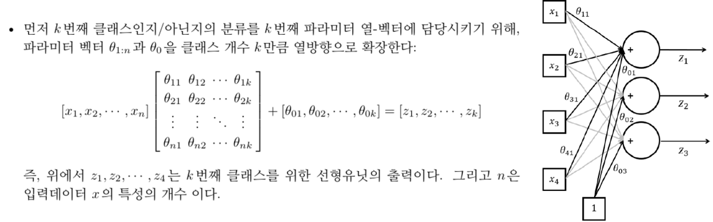
## theta initialization
m, n = X.shape # m : num of data / n : num of dim
k = len(Y_[0,:]) # k : num of class
################## Fill Your Code! ##################
theta = np.random.randn(n + 1, k)
####################################################### z Computation Example
################## Fill Your Code! ##################
Z = X @ theta[1:] + theta[0]
#####################################################
print(Z)[[-0.6529836 -0.74910106 2.55022119 -1.98233312]
[-2.38048764 1.28398881 4.61814896 -3.63131757]
[-2.20006126 5.89587534 2.33262891 -0.560009 ]
[-1.15588285 9.49121695 -0.98685502 3.33579179]
[ 2.29912522 5.42503721 -5.12271055 6.63376071]
[ 2.11869883 0.81315067 -2.8371905 3.56245213]
[ 2.71181127 -7.12122407 -0.44287432 -0.22001849]
[ 2.80202447 -4.81528081 -1.58563434 1.31563579]]2.2 Softmax
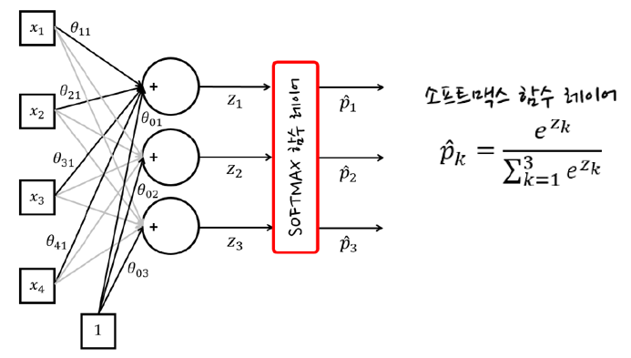
# hint : np.exp / np.sum / reshape
# axis = 0 : row / axis = 1 : column
def softmax(z):
################## Fill Your Code! ##################
# hint : np.exp , np.sum
return np.exp(z) / np.sum(np.exp(z), axis = 1).reshape((len(z), 1))
####################################################### p_hat Computation Example
################## Fill Your Code! ##################
P_hat = softmax(Z)
#####################################################
print(P_hat)[[3.73353258e-02 3.39138163e-02 9.18870088e-01 9.88076993e-03]
[8.80699565e-04 3.43787183e-02 9.64488467e-01 2.52115324e-04]
[2.95834150e-04 9.70663940e-01 2.75150708e-02 1.52515488e-03]
[2.37181189e-05 9.97830860e-01 2.80858839e-05 2.11733587e-03]
[9.99216597e-03 2.27628148e-01 5.97581740e-06 7.62373710e-01]
[1.81335734e-01 4.91463230e-02 1.27693268e-03 7.68241010e-01]
[9.12404695e-01 4.89502055e-05 3.89157108e-02 4.86306440e-02]
[8.07031060e-01 3.96950728e-04 1.00312312e-02 1.82540758e-01]]## Checking sum of P_hat
# hint : np.sum / axis = 1
################## Fill Your Code! ##################
print(np.sum(P_hat, axis = 1))
#####################################################[1. 1. 1. 1. 1. 1. 1. 1.]## forward : without thresh hold function
def multi_classifier_forward(x, theta):
z = x @ theta[1:] + theta[0]
p_hat = softmax(z)
return p_hat
## predict : with thresh hold function
def multi_classifier_predict(x, theta):
z = x @ theta[1:] + theta[0]
p_hat = softmax(z)
return 1 + np.argmax(p_hat, axis=1)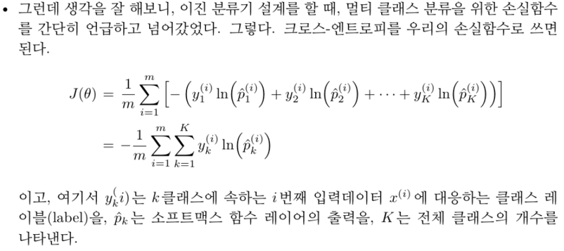
def cross_entropy(x, y, theta):
################## Fill Your Code! ##################
# hint : multi_classifier_forward / np.mean / np.sum / np.log
p_hat = multi_classifier_forward(x, theta)
J = -np.mean(np.sum((y*np.log(p_hat)), axis = 1))
#####################################################
return J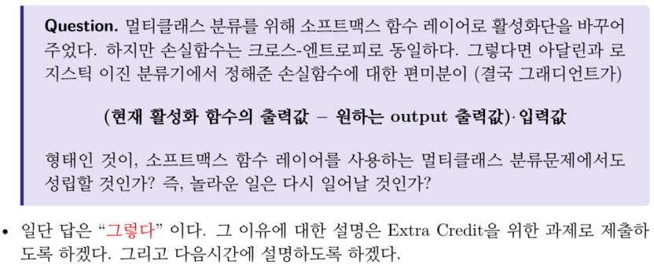


J_hist = []
for i in range(1000):
# compute cross entrophy
J = cross_entropy(X, Y_, theta)
J_hist.append(J)
################## Fill Your Code! ##################
# compute error = Y_hat - Y_
Y_hat = softmax(X @ theta[1:] + theta[0])
error = Y_hat - Y_
# gradient descent rule
gradient_bias = np.ones((m,1)).T @ error
gradient_theta = X.T @ error
gradient = np.r_[gradient_bias, gradient_theta]
theta = theta - 0.01 * gradient
#####################################################
plt.plot(J_hist, 'r', linewidth = 2, label = "loss")
plt.xlabel("iter")
plt.ylabel("J")
plt.legend()
plt.show()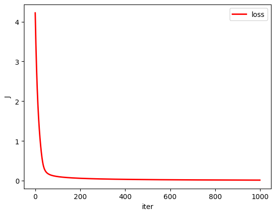
## Test multi_classifier_forward
print(multi_classifier_forward(X, theta))[[9.79032066e-01 7.53075867e-03 1.50658520e-03 1.19305902e-02]
[9.85163345e-01 1.47816878e-02 1.30196089e-05 4.19477730e-05]
[1.79337356e-02 9.81488707e-01 5.75802770e-04 1.75498495e-06]
[6.95537538e-06 9.94138510e-01 5.85450789e-03 2.64641134e-08]
[8.73327250e-08 3.28061603e-03 9.96692080e-01 2.72171398e-05]
[2.06422115e-04 2.12586583e-03 9.69676627e-01 2.79910847e-02]
[1.51554707e-03 5.07298910e-08 6.41539998e-04 9.97842862e-01]
[9.80380782e-04 1.98193164e-06 2.04552949e-02 9.78562342e-01]]## Test multi_classifier_predict
print(multi_classifier_predict(X, theta))[1 1 2 2 3 3 4 4]x = np.array([[-100, 100]])
print(multi_classifier_predict(x, theta))[2]2.3 Decision Boundaries of the Quadrant Classifier
num_of_samples = 100
(m, n) = X.shape
x1_min = -1.
x1_max = 1.
x2_min = -1.
x2_max = 1.
x1 = np.linspace(x1_min, x1_max, num_of_samples)
x2 = np.linspace(x2_min, x2_max, num_of_samples)
X_new = np.ones((num_of_samples**2 , n))
for i in range(num_of_samples):
for j in range(num_of_samples):
X_new[i*num_of_samples + j, 0] = x1[i]
X_new[i*num_of_samples + j, 1] = x2[j]
Y_hat = multi_classifier_predict(X_new, theta)
Y_hat = np.reshape(Y_hat, (num_of_samples**2))
plt.plot(X_new[Y_hat == 1][:, 0], X_new[Y_hat == 1][:, 1], 'g.', markersize = 1)
plt.plot(X_new[Y_hat == 2][:, 0], X_new[Y_hat == 2][:, 1], 'r.', markersize = 1)
plt.plot(X_new[Y_hat == 3][:, 0], X_new[Y_hat == 3][:, 1], 'b.', markersize = 1)
plt.plot(X_new[Y_hat == 4][:, 0], X_new[Y_hat == 4][:, 1], 'k.', markersize = 1)
plt.plot([-1, 1], [0, 0], 'k', linewidth = 2)
plt.plot([0, 0], [-1, 1], 'k', linewidth = 2)
plt.xlim(x1_min, x1_max)
plt.ylim(x2_min, x2_max)
plt.grid()
plt.xlabel("x1")
plt.ylabel("x2")
plt.show()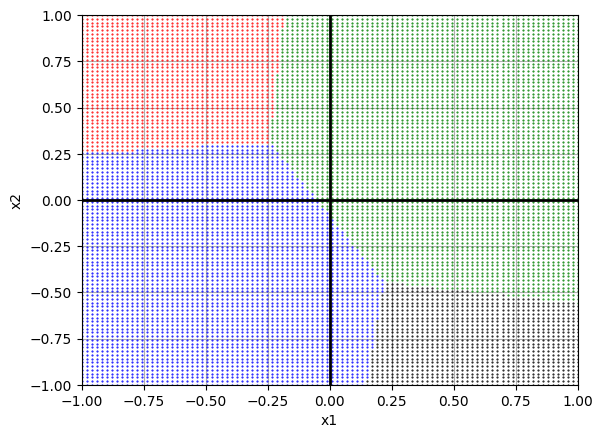
Why does the result look like this? With only 8 training points the softmax classifier has no reason to align its boundaries with the axes. Below, the same model is trained on a denser dataset covering all four quadrants.
## Generate Dataset
X = np.array([])
x1 = np.linspace(0,1,100).reshape((100, 1))
x2 = np.linspace(0,1,100).reshape((100, 1))
X = np.c_[x1, x2]
X = np.r_[X, np.c_[-x1, x2]]
X = np.r_[X, np.c_[-x1, -x2]]
X = np.r_[X, np.c_[x1, -x2]]
Y = np.r_[np.ones(100), np.ones(100)*2, np.ones(100)*3, np.ones(100)*4].reshape((400, 1))
## One-Hot Encoding
Y_ = np.zeros((400,4))
for i in range(400):
Y_[i, (Y[i]-1).astype(int)] = 1
## theta initialization
m, n = X.shape # m : num of data / n : num of dim
k = len(Y_[1,:]) # k : num of class
theta = np.random.randn(n + 1, k)J_hist = []
for i in range(1000):
# compute cross entrophy
J = cross_entropy(X, Y_, theta)
J_hist.append(J)
# compute error = Y_hat - Y_
Y_hat = softmax(X @ theta[1:] + theta[0])
error = Y_hat - Y_
# gradient descent rule
gradient_bias = np.ones((m,1)).T @ error
gradient_theta = X.T @ error
gradient = np.r_[gradient_bias, gradient_theta]
theta = theta - 0.01 * gradient
plt.plot(J_hist, 'r', linewidth = 2, label = "loss")
plt.xlabel("iter")
plt.ylabel("J")
plt.legend()
plt.show()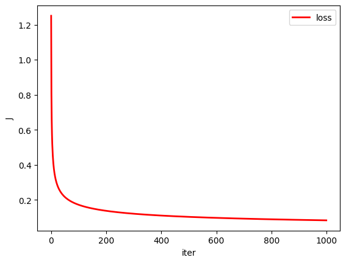
num_of_samples = 100
(m, n) = X.shape
x1_min = -1.
x1_max = 1.
x2_min = -1.
x2_max = 1.
x1 = np.linspace(x1_min, x1_max, num_of_samples)
x2 = np.linspace(x2_min, x2_max, num_of_samples)
X_new = np.ones((num_of_samples**2 , n))
for i in range(num_of_samples):
for j in range(num_of_samples):
X_new[i*num_of_samples + j, 0] = x1[i]
X_new[i*num_of_samples + j, 1] = x2[j]
Y_hat = multi_classifier_predict(X_new, theta)
Y_hat = np.reshape(Y_hat, (num_of_samples**2))
plt.plot(X_new[Y_hat == 1][:, 0], X_new[Y_hat == 1][:, 1], 'g.', markersize = 1)
plt.plot(X_new[Y_hat == 2][:, 0], X_new[Y_hat == 2][:, 1], 'r.', markersize = 1)
plt.plot(X_new[Y_hat == 3][:, 0], X_new[Y_hat == 3][:, 1], 'b.', markersize = 1)
plt.plot(X_new[Y_hat == 4][:, 0], X_new[Y_hat == 4][:, 1], 'k.', markersize = 1)
plt.plot([-1, 1], [0, 0], 'k', linewidth = 2)
plt.plot([0, 0], [-1, 1], 'k', linewidth = 2)
plt.xlim(x1_min, x1_max)
plt.ylim(x2_min, x2_max)
plt.grid()
plt.xlabel("x1")
plt.ylabel("x2")
plt.show()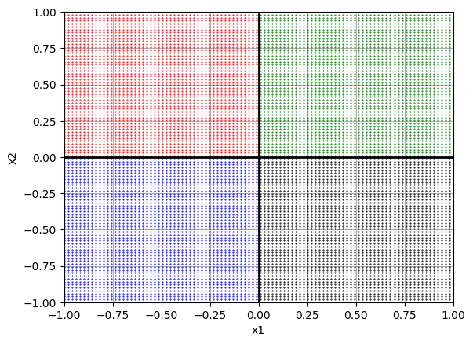